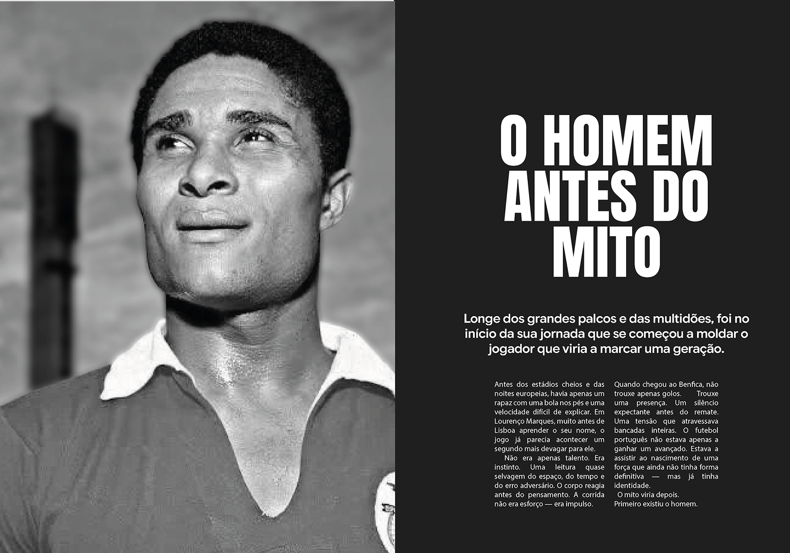
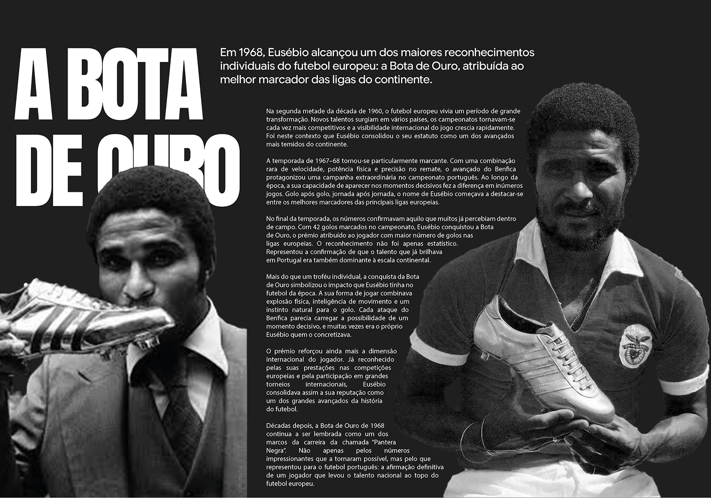
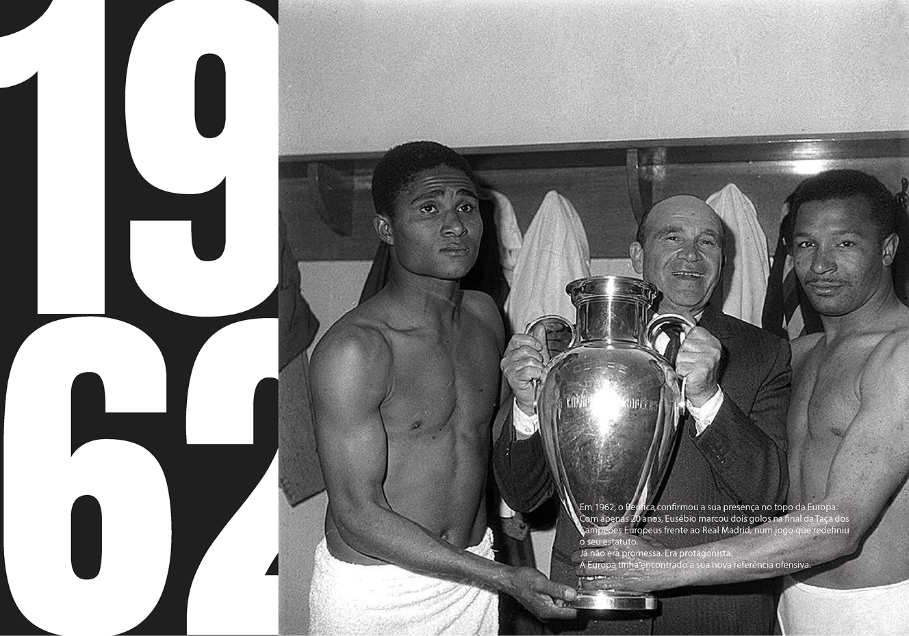
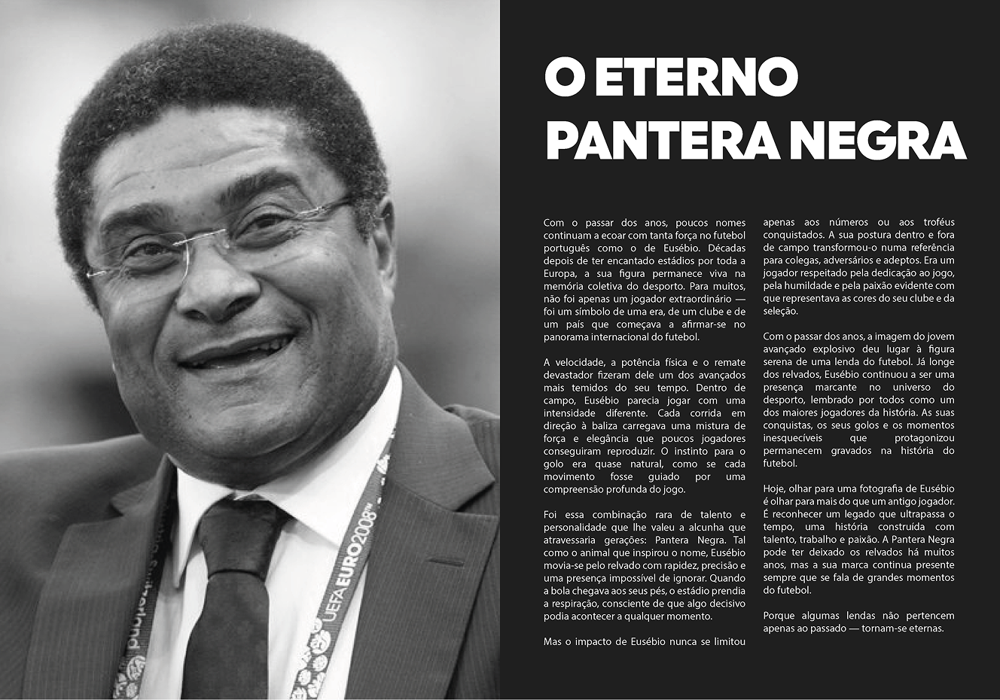
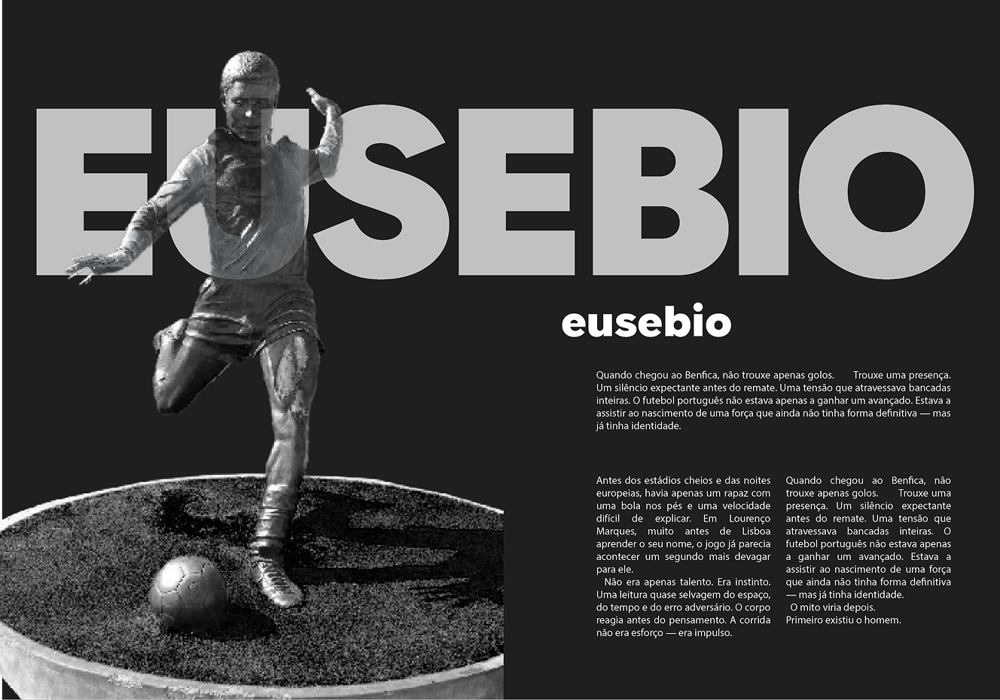
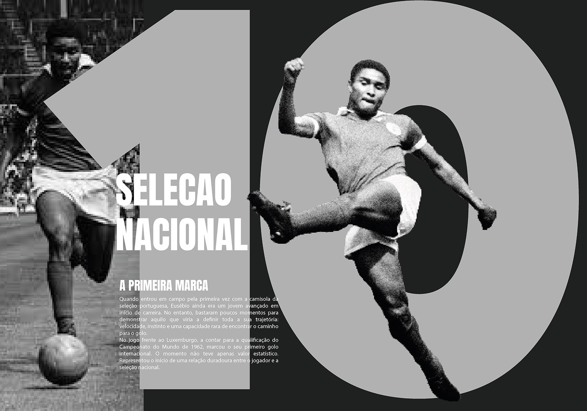

Projeto editorial dedicado à vida e legado de Eusébio, uma das maiores figuras da história do futebol português. A revista explora a construção do seu imaginário enquanto jogador, desde os primeiros momentos até à consolidação como “Pantera Negra”.
Através de uma abordagem visual forte, baseada no contraste entre preto e branco e detalhes gráficos de grande impacto, o projeto procura transmitir intensidade, elegância e intemporalidade.
Mais do que uma simples narrativa biográfica, esta revista apresenta uma homenagem visual ao percurso de Eusébio, considerando o design editorial como ferramenta de memória e identidade.





